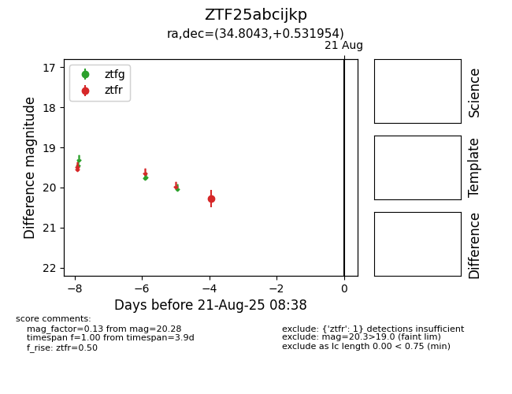

Target ZTF25abcijkp at 2025-08-21 08:38, see:
FINK: fink-portal.org/ZTF25abcijkp
Lasair: lasair-ztf.lsst.ac.uk/objects/ZTF25abcijkp
ALeRCE: alerce.online/object/ZTF25abcijkp
alt names
ZTF25abcijkp (ztf,alerce)
coordinates:
equatorial (ra, dec) = (34.8043,+0.53195)
galactic (l, b) = (163.8463,-55.20854)
photometry
last ztfr=20.28
1 ztfr detections
